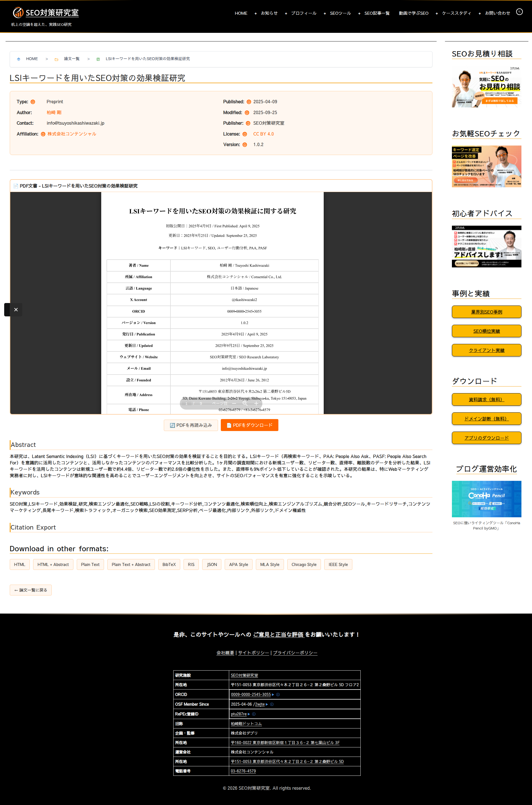

引用エクスポート・SEO
12種類の引用形式エクスポートと、Google Scholar・Schema.org・Dublin Core対応の包括的な学術SEO機能について解説します。
引用エクスポート機能
個別論文ページの「Citation Export」セクションから、各引用形式でダウンロードできます。data:URIスキームを使用しているため、サーバーへの追加リクエストは発生しません。
論文の個別ページ（/paper/{ID}/）にアクセス
ページ下部の「Citation Export」セクションまでスクロール
「Download in other formats:」から必要な形式のリンクをクリック
ファイルが自動的にダウンロードされます（ファイル名: {BibTeXキー}.{拡張子}）

書誌ツール形式
| 形式 | 拡張子 | 対応ツール | 説明 |
|---|---|---|---|
| BibTeX | .bib | LaTeX, Overleaf | LaTeX文書での引用に最も広く使われる形式 |
| RIS | .ris | EndNote, Mendeley, Zotero | 主要な文献管理ソフトで対応 |
| ReDIF | .redif | RePEc | 経済学分野の文献データベース向け |
| JSON | .json | カスタムツール | プログラムでの処理に適した構造化データ |
引用スタイル形式
| スタイル | 主な分野 | 出力例 |
|---|---|---|
| APA | 心理学・社会科学 | 柏崎 剛 (2025). タイトル. 出版元. Retrieved from URL |
| MLA | 人文科学 | 柏崎 剛. "タイトル." 出版元, 日付. Web. アクセス日. |
| Chicago | 歴史学・出版 | 柏崎 剛. "タイトル." 出版元. Last modified 日付. URL. |
| IEEE | 工学・情報科学 | 柏崎 剛, "タイトル," 出版元, 年, [Online]. Available: URL. |
Google Scholar対応メタタグ
Google Scholarのインデックスに必要なcitation_*メタタグを自動生成します。Google Scholarのクローラーが論文を正確に認識するための最も重要な機能です。
| メタタグ | 説明 | 対応フィールド |
|---|---|---|
citation_title |
論文タイトル | 投稿タイトル |
citation_author |
著者名 | Author Name |
citation_publication_date |
公開日 | Publication Date |
citation_pdf_url |
PDF URL | PDF File URL |
citation_abstract_html_url |
ランディングページURL | 自動生成 |
citation_publisher |
出版者 | Publisher |
citation_doi |
DOI | DOI |
citation_keywords |
キーワード | Keywords |
citation_language |
言語 | Language Code |
Schema.org構造化データ
JSON-LD形式でSchema.orgの構造化データを自動生成します。5種類のスキーマタイプに対応。
| スキーマタイプ | 推奨用途 |
|---|---|
| ScholarlyArticle | 学術論文（デフォルト） |
| TechArticle | 技術文書 |
| Report | 研究レポート |
| Article | 一般記事 |
| WebPage | Webページ |
JSON-LDには著者情報（Person）、所属組織（Organization）、出版社（Organization）、PDFファイル（MediaObject）、DOI（identifier）、ライセンス、画像など25以上のプロパティが含まれます。
その他のメタデータ
- Dublin Core (DC.*) メタタグ: 学術リポジトリ向け
- Open Graph Protocol (OGP): SNSシェア時のプレビュー表示
- Twitter Card: Twitter/Xでのシェア最適化
PDFビューア
個別論文ページにはPDFビューアが統合されています。
PDFビューアは複数のフォールバック機構を持ちます。Mozilla PDF.js → Google Docs Viewer → Microsoft Office Online Viewer → 直接埋め込みの順に試行し、最大3回のリトライで最適なビューアを自動選択します。